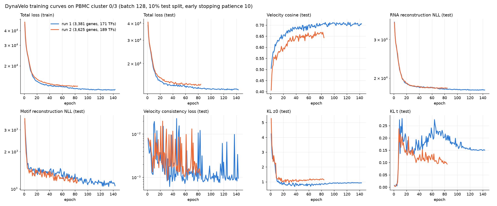

10x PBMC マルチオームの T/NK 細胞（5,225 細胞）で DynaVelo を学習し、VCC 2026 の context A に近い細胞の上で in-silico ノックダウンを行った結果。
| 1 回目 | 2 回目 | |
|---|---|---|
| モデル遺伝子 | 3,381 | 3,625 |
| TF モチーフ | 171 | 189 |
| 本番 300 標的のカバー | 85 | 300 |
| 保存されたチェックポイント | エポック 133 | エポック 74 |
| テストの速度コサイン | 0.711 | 0.666 |

エポックごとの値: 1 回目 (CSV)・2 回目 (CSV)